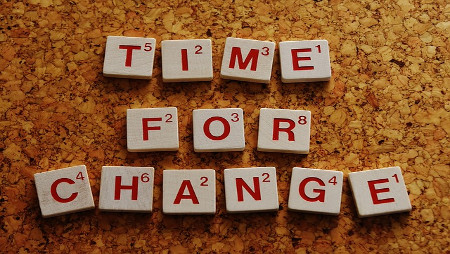

Ultimo Post - Dia 1
Esse dia começou as 5 horas da manhã, o sono me consumia, lembro de ter
sonhado, mas, não lembro com o que. O objetivo era que todos da minha equipe
estivessem na escola de 6 horas, sendo que a escola abre as 7, para que nós
pudessemos ensaiar...
Ver Mais

Dias de Minha Vida
Aqui é apresentado alguns episódio, dignos de série no Netflix, sobre
a minha vida em geral, o quão bosta ela é, o que eu faço, quem eu conheço.
De um modo geral, aqui é um diario gigante formado por dias ruins e bons,
experiencias ruins e boas. Mas qual é o Objetivo? Tem um menu ali meu
jovem.
Ver Mais
Programação
Aqui é onde será postado programas simples em algumas linguagens de programação
que por algum motivo, razão ou circunstância possa servir de alguma maneira pra você.
Também vou tentar explicar coisas simples sobre esse mundo o qual sou bastante novo,
entretanto bastante interessado.
Ver Mais
Coisas Aleatórias
Esse tópico vai de reflexões retardadas até qualquer coisa que me vier
a mente em qualquer dia. O objetivo eu deixo claro aqui, ver como eu pensava,
minhas ideologias, possiveis resoluções de problemas sociais na minha visão.
É importante salientar que não tem o objetivo de fazer a cabeça de alguém, apenas
apresentar o que eu penso.
Ver Mais
Tutoriais
Desde Linux a talvez cubo mágico e a outras coisas que me parecem problemas
que grande parte das pessoas tem inclusive eu. Objetivo? Deixar salvo a resolução
de tais problemas para que os mesmos possam ser usado, até por min mesmo, no local
onde eu sei que vai tá. Meio dificil de explicar ehehe.
Ver Mais